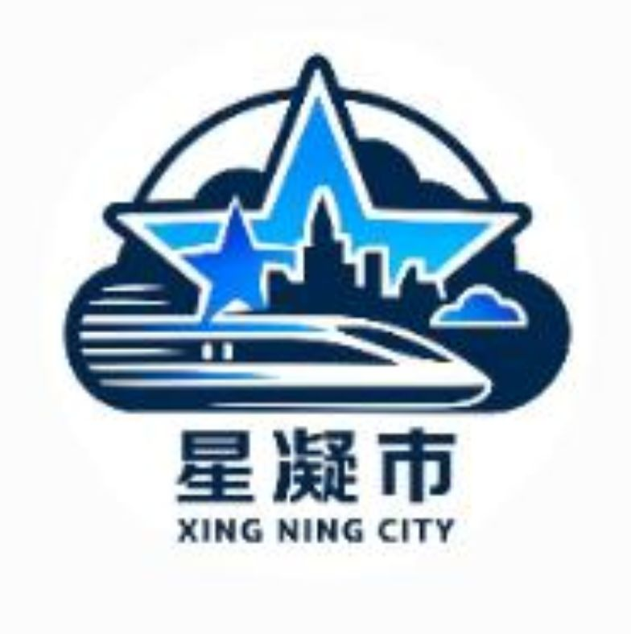

开服时间
2025 年 12 月 5 日正式开服，长期稳定运营

点击任意位置进站
在方块世界里，驾驶列车穿梭于高楼大厦与山川湖海之间
基于 ymtr 改版，做了些自己的调整和优化
2025 年 12 月 5 日正式开服，长期稳定运营
ymtr 是在 MTR 基础上改的版本，针对信号系统、列车物理、车辆性能做了不少本地化适配和优化，玩起来更顺手
跑在 1.20.1 Fabric 上，进服前得先装整合包，去群文件里下，别直接进原版客户端
以星凝市为中心，往外辐射几个卫星城，市区地铁、城际高铁、区域快线叠在一起，线路网挺密集
非商业、非官方，纯粹几个喜欢铁路的人自己玩，欢迎同样爱好建设、调度、开车的朋友
已建成与规划中的轨道交通线路
全网最大换乘枢纽，汇聚地铁、快速、城际三大体系
市区主干线，贯穿东西，串联核心商圈与居住区
南北向骨干线，连接主城与南部新区
大站快车模式，连接主城与远郊卫星城，运行速度更快
环线走向，补强区域联络，缓解一三号线压力
规划中连接主城与星郊机场，设星郊机场站，服务航空客流
规划中随手拍的几张，更多得进游戏里看
改版里做出来的东西，不一定完美，但能玩
完整的自动列车控制，定点停车、限速巡航、看信号灯自动启停，不用一直盯着屏幕也能跑图
核心玩法多种信号灯、自动闭塞、联锁逻辑，轨道电路保证列车间隔，开车得真看灯、真守规矩
核心玩法连主城和卫星城的高速干线，设计时速 300km/h 起步，坐上去就是快，沿线风景也不错
线路类型市区几条线换乘，早晚高峰客流挺大，地下车站一个个挖出来的，细节自己体会
线路类型从市政府大换乘枢纽到郊区小站房，每座都花过心思，既要好看又要能用，不搞花架子
建设成果支持按图行车、临时调度、故障处理这些真实场景，喜欢调度的可以来试试手
进阶玩法我们不专业，就是单纯喜欢铁路，欢迎同好